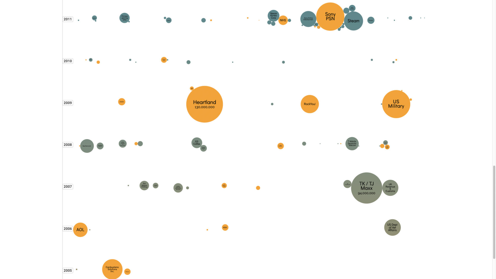
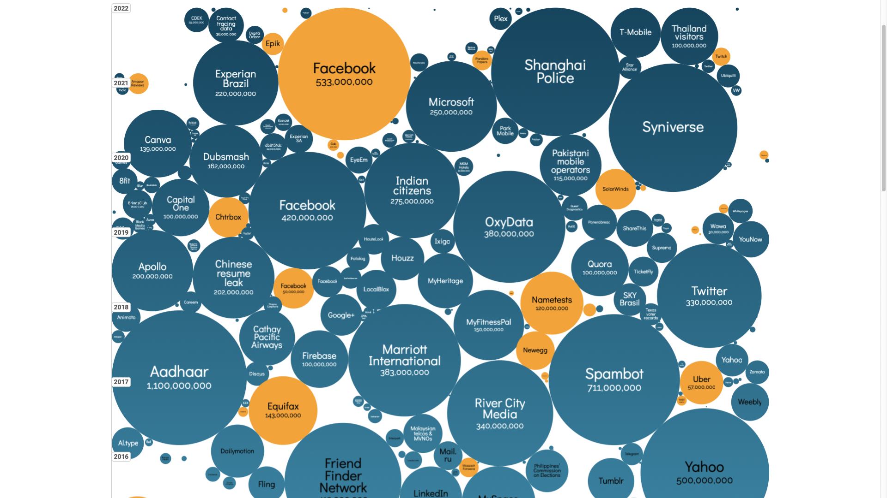
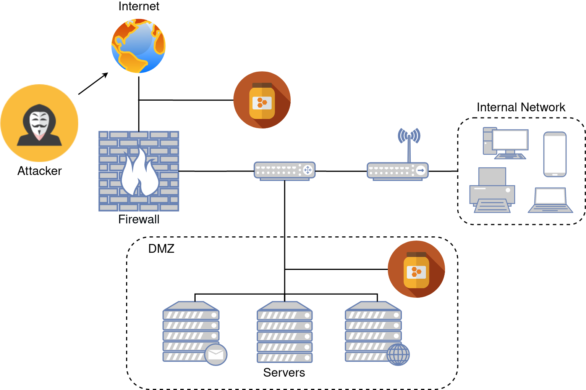

<!DOCTYPE html>
<html lang="en">
  <head>
    <meta charset="utf-8" />
    <meta name="viewport" content="width=device-width, initial-scale=1.0, maximum-scale=1.0, user-scalable=no" />

    <title></title>
    <link rel="stylesheet" href="dist/reveal.css" />
    <link rel="stylesheet" href="dist/theme/white.css" id="theme" />
    <link rel="stylesheet" href="css/vs2015.css" />
	<link rel="stylesheet" href="css/layout.css" />
	<link rel="stylesheet" href="plugin/customcontrols/style.css">


    <script defer src="dist/fontawesome/all.min.js"></script>

	<script type="text/javascript">
		var forgetPop = true;
		function onPopState(event) {
			if(forgetPop){
				forgetPop = false;
			} else {
				parent.postMessage(event.target.location.href, "app://obsidian.md");
			}
        }
		window.onpopstate = onPopState;
		window.onmessage = event => {
			if(event.data == "reload"){
				window.document.location.reload();
			}
			forgetPop = true;
		}

		function fitElements(){
			const itemsToFit = document.getElementsByClassName('fitText');
			for (const item in itemsToFit) {
				if (Object.hasOwnProperty.call(itemsToFit, item)) {
					var element = itemsToFit[item];
					fitElement(element,1, 1000);
					element.classList.remove('fitText');
				}
			}
		}

		function fitElement(element, start, end){

			let size = (end + start) / 2;
			element.style.fontSize = `${size}px`;

			if(Math.abs(start - end) < 1){
				while(element.scrollHeight > element.offsetHeight){
					size--;
					element.style.fontSize = `${size}px`;
				}
				return;
			}

			if(element.scrollHeight > element.offsetHeight){
				fitElement(element, start, size);
			} else {
				fitElement(element, size, end);
			}		
		}


		document.onreadystatechange = () => {
			fitElements();
			if (document.readyState === 'complete') {
				if (window.location.href.indexOf("?export") != -1){
					parent.postMessage(event.target.location.href, "app://obsidian.md");
				}
				if (window.location.href.indexOf("print-pdf") != -1){
					let stateCheck = setInterval(() => {
						clearInterval(stateCheck);
						window.print();
					}, 250);
				}
			}
	};


        </script>
  </head>
  <body>
    <div class="reveal">
      <div class="slides"><section  data-markdown><script type="text/template"><!-- .slide: class="drop" data-background-opacity="0.5" data-background-image="aquaryus15-j0TOma0mHdc-unsplash.jpg" -->
<div class="" style="position: absolute; left: 0px; top: 0px; height: 1200px; width: 1920px; min-height: 1200px; display: flex; flex-direction: column; align-items: center; justify-content: center" absolute="true">

<div class="has-light-background" style="color: #ffffff; background-color: #ffbc39; position: absolute; left: 60%; top: 50%; height: 30%; width: 80%; display: flex; flex-direction: column; align-items: flex-start; justify-content: space-evenly" align="left">
</div>

<div class="" style="padding: 20px; box-sizing: border-box; position: absolute; left: 60%; top: 50%; height: 30%; width: 80%; display: flex; flex-direction: column; align-items: flex-start; justify-content: space-evenly" align="left">

# Honeypotok
##### *méz mellett fullánkot is találni*

</div>
</div></script></section><section  data-markdown><script type="text/template"><!-- .slide: class="drop" -->
<div class="" style="position: absolute; left: 0px; top: 0px; height: 1200px; width: 1920px; min-height: 1200px; display: flex; flex-direction: column; align-items: center; justify-content: center" absolute="true">

<div class="" style="padding: 60px; box-sizing: border-box; position: absolute; left: 0%; top: 15%; height: 65%; width: 20%; display: flex; flex-direction: column; align-items: center; justify-content: space-evenly" align="justify">


<i color="black" class="fas fa-question fa-5x"></i>

**miért** <!-- .element: style="font-size: 54px" -->

</div>

<div class="" style="padding: 60px; box-sizing: border-box; position: absolute; left: 20%; top: 15%; height: 65%; width: 20%; display: flex; flex-direction: column; align-items: center; justify-content: space-evenly" align="justify">


<i color="black" class="fas fa-shield-alt fa-5x"></i>

**honeypot** <!-- .element: style="font-size: 54px" -->

</div>

<div class="" style="padding: 60px; box-sizing: border-box; position: absolute; left: 40%; top: 15%; height: 65%; width: 20%; display: flex; flex-direction: column; align-items: center; justify-content: space-evenly" align="justify">


<i color="black" class="fas fa-clipboard-list fa-5x"></i>

**gyakorlatban** <!-- .element: style="font-size: 54px" -->

</div>
<div class="" style="padding: 60px; box-sizing: border-box; position: absolute; left: 60%; top: 15%; height: 65%; width: 20%; display: flex; flex-direction: column; align-items: center; justify-content: space-evenly" align="justify">


<i color="black" class="fas fa-microscope fa-5x"></i>

**fejlesztés** <!-- .element: style="font-size: 54px" -->

</div>


###### AGENDA<!-- .element: style="font-size: 112px; background-color: #ffbc39; padding: 20; box-sizing: border-box; transform: rotate(90deg); position: absolute; left: 62%; top: 50%; height: 20%; width: 45%; display: flex; flex-direction: column; align-items: flex-start; justify-content: space-evenly" class="has-light-background" align="left" -->
</div></script></section><section  data-markdown><script type="text/template"><!-- .slide: class="drop" data-background-image="milosz-klinowski-BW0d0IllW8E-unsplash_.jpg" -->
<div class="" style="position: absolute; left: 0px; top: 0px; height: 1200px; width: 1920px; min-height: 1200px; display: flex; flex-direction: column; align-items: center; justify-content: center" absolute="true">

<div class="has-light-background" style="background-color: #ffbc39; padding: 60px; box-sizing: border-box; position: absolute; left: 17%; top: 12%; height: 20%; width: 20%; display: flex; flex-direction: column; align-items: center; justify-content: space-evenly" align="justify">


#### miért?  <!-- .element: style="font-size: 60px" -->

</div>
</div>

<aside class="notes"><p>egyenszilárdságúvédelem</p>
</aside></script></section><section  data-markdown><script type="text/template"><!-- .slide: class="drop" -->
<div class="" style="position: absolute; left: 0px; top: 0px; height: 1200px; width: 1920px; min-height: 1200px; display: flex; flex-direction: column; align-items: center; justify-content: center" absolute="true">


</div></script></section><section  data-markdown><script type="text/template"><!-- .slide: class="drop" -->
<div class="" style="position: absolute; left: 0px; top: 0px; height: 1200px; width: 1920px; min-height: 1200px; display: flex; flex-direction: column; align-items: center; justify-content: center" absolute="true">


</div></script></section><section  data-markdown><script type="text/template"><!-- .slide: style="text-align: left" class="drop" -->
<div class="" style="position: absolute; left: 0px; top: 0px; height: 1200px; width: 1920px; min-height: 1200px; display: flex; flex-direction: column; align-items: center; justify-content: center" absolute="true">

<div class="" style="font-size: 124px; position: absolute; left: 10%; top: -25%; height: 100%; width: 50%; display: flex; flex-direction: column; align-items: center; justify-content: center" >

######  Elterjedt védelmi megoldások 
</div>  
    
      
    

<div class="has-light-background" style="color: #000000; background-color: #ffbc39; position: absolute; left: 10%; top: 45%; height: 12%; width: 25%; display: flex; flex-direction: column; align-items: center; justify-content: center" >
  
### IDS  
</div>  
<div class="has-dark-background" style="color: #000000; background-color: #735d38; position: absolute; left: 26%; top: 55%; height: 12%; width: 20%; display: flex; flex-direction: column; align-items: center; justify-content: center" >
  
### IPS  
</div>  
<div class="has-dark-background" style="color: #000000; background-color: #bb7901; position: absolute; left: 53%; top: 45%; height: 12%; width: 25%; display: flex; flex-direction: column; align-items: center; justify-content: center" >
  
### Tűzfal  
</div>  
<div class="has-light-background" style="color: #000000; background-color: #ffbc39; position: absolute; left: 44%; top: 75%; height: 12%; width: 30%; display: flex; flex-direction: column; align-items: center; justify-content: center" >
  
### Forgalomelemzés  
</div>  
<div class="has-dark-background" style="color: #000000; background-color: #bb7901; position: absolute; left: 15%; top: 70%; height: 12%; width: 20%; display: flex; flex-direction: column; align-items: center; justify-content: center" >
  
### DMZ  
</div>  
<div class="has-light-background" style="color: #000000; background-color: #c4a181; position: absolute; left: 50%; top: 60%; height: 12%; width: 20%; display: flex; flex-direction: column; align-items: center; justify-content: center" >
  
### VPN  
</div>
</div></script></section><section  data-markdown><script type="text/template"><!-- .slide: class="has-light-background drop" data-background-color="#ffbc39" -->
<div class="" style="position: absolute; left: 0px; top: 0px; height: 1200px; width: 1920px; min-height: 1200px; display: flex; flex-direction: column; align-items: center; justify-content: center" absolute="true">

<div class="" style="position: absolute; left: 65%; top: undefined%; height: 20%; width: 20%; display: flex; flex-direction: column; align-items: center; justify-content: center" align="center">

## Merre indulnátok? 
</div>

<div class="" style="padding: 0px; box-sizing: border-box; position: absolute; left: 0%; top: 0%; height: 100%; width: 50%; display: flex; flex-direction: column; align-items: center; justify-content: center" >


</div>
</div></script></section><section  data-markdown><script type="text/template"><!-- .slide: style="text-align: left" class="drop" -->
<div class="" style="position: absolute; left: 0px; top: 0px; height: 1200px; width: 1920px; min-height: 1200px; display: flex; flex-direction: column; align-items: center; justify-content: center" absolute="true">

<div class="" style="position: absolute; left: 18%; top: -15%; height: 100%; width: 50%; display: flex; flex-direction: column; align-items: center; justify-content: center" >


# Mi az a honeypot?
</div>

<div class="has-light-background" style="background-color: #ffbc39; position: absolute; left: 20%; top: 40%; height: undefined%; width: 50%; display: flex; flex-direction: column; align-items: center; justify-content: center" >


<i class="fas fa-quote-left fa-2x fa-pull-left"></i>
IT biztonsági mechanizmus, amely az információs rendszerek illetéktelen használatára vonatkozó kísérletek észlelésére, elhárítására vagy valamilyen módon ellensúlyozására szolgál.<!-- .element: style="font-size: 48px; display: flex; flex-direction: column; align-items: center; justify-content: space-evenly" align="justify" -->
</div>
</div></script></section><section  data-markdown><script type="text/template"><!-- .slide: style="text-align: left; display: flex; flex-direction: column; align-items: center; justify-content: center" class="drop" align="center" -->
<div class="" style="position: absolute; left: 0px; top: 0px; height: 1200px; width: 1920px; min-height: 1200px; display: flex; flex-direction: column; align-items: center; justify-content: center" absolute="true">

<div class="" style="position: absolute; left: 18%; top: -15%; height: 100%; width: 50%; display: flex; flex-direction: column; align-items: center; justify-content: center" >


# Honeypotok ismertetése
</div>

<div class="has-light-background" style="background-color: #ffbc39; position: absolute; left: 30%; top: 50%; height: undefined%; width: 50%; display: flex; flex-direction: column; align-items: center; justify-content: center" >


- szimulált szolgáltatások
- csapdarendszer
- sérülékenynek mutatja magát
- monitorozza a támadó tevékenységét

<!-- .element: style="font-size: 48px; display: flex; flex-direction: column; align-items: flex-start; justify-content: space-evenly" align="left" -->
</div>
</div></script></section><section  data-markdown><script type="text/template"><!-- .slide: style="text-align: left; display: flex; flex-direction: column; align-items: center; justify-content: center" class="drop" align="center" -->
<div class="" style="position: absolute; left: 0px; top: 0px; height: 1200px; width: 1920px; min-height: 1200px; display: flex; flex-direction: column; align-items: center; justify-content: center" absolute="true">

<div class="" style="padding: ; box-sizing: border-box; position: absolute; left: 3%; top: -35%; height: 100%; width: 50%; display: flex; flex-direction: column; align-items: flex-start; justify-content: space-evenly" align="left">


## Felhasználási lehetőségek
</div>

<div class="has-light-background" style="background-color: #ffbc39; padding: 10px; box-sizing: border-box; position: absolute; left: 3%; top: 20%; height: undefined%; width: 40%; display: flex; flex-direction: column; align-items: flex-start; justify-content: space-evenly" align="left">


- Időhúzás
- Belső hálózat vizsgálata
- Fekete lista kialakítás
- IDS/IPS fejlesztése
- Security Informations and Event Management rendszer táplálása

<!-- .element: style="font-size: 48px; display: flex; flex-direction: column; align-items: flex-start; justify-content: space-evenly" align="left" -->
</div>

<div class="" style="position: absolute; left: 45%; top: NaN%; height: undefined%; width: 55%; display: flex; flex-direction: column; align-items: center; justify-content: center" >



</div>
</div></script></section><section  data-markdown><script type="text/template"><!-- .slide: style="text-align: left" class="drop" -->
<div class="" style="position: absolute; left: 0px; top: 0px; height: 1200px; width: 1920px; min-height: 1200px; display: flex; flex-direction: column; align-items: center; justify-content: center" absolute="true">

<div class="" style="position: absolute; left: 10%; top: -35%; height: 100%; width: 50%; display: flex; flex-direction: column; align-items: flex-start; justify-content: space-evenly" align="left">


## Csoportosításuk
</div>

<div class="has-light-background" style="background-color: #ffbc39; padding: 10px; box-sizing: border-box; position: absolute; left: 10%; top: 25%; height: undefined%; width: 28%; display: flex; flex-direction: column; align-items: flex-start; justify-content: space-evenly" align="left">


#### Céljuk szerint

- Kutatási
- Vállalati - "*Production*"

<!-- .element: style="display: flex; flex-direction: column; align-items: flex-start; justify-content: space-evenly" align="left" -->
</div>

<div class="has-light-background" style="background-color: #ffbc39; padding: 10px; box-sizing: border-box; position: absolute; left: 10%; top: 50%; height: undefined%; width: 28%; display: flex; flex-direction: column; align-items: flex-start; justify-content: space-evenly" align="left">


#### Interakció szerint

- Alacsony
- Közepes
- Magas

<!-- .element: style="display: flex; flex-direction: column; align-items: flex-start; justify-content: space-evenly" align="left" -->
</div>

<div class="" style="position: absolute; left: 45%; top: NaN%; height: undefined%; width: 55%; display: flex; flex-direction: column; align-items: center; justify-content: center" >


</div>
</div></script></section><section  data-markdown><script type="text/template"><!-- .slide: class="drop" data-background-image="resource-database-TIUyoNGM0no-unsplash.jpg" -->
<div class="" style="position: absolute; left: 0px; top: 0px; height: 1200px; width: 1920px; min-height: 1200px; display: flex; flex-direction: column; align-items: center; justify-content: center" absolute="true">

<div class="has-light-background" style="background-color: #ffbc39; padding: 10px; box-sizing: border-box; position: absolute; left: 50%; top: 50%; height: undefined%; width: 40%; display: flex; flex-direction: column; align-items: center; justify-content: center" >

# Gyakorlatban
</div>
</div></script></section><section  data-markdown><script type="text/template"><!-- .slide: class="drop" data-background-size="contain" data-background-image="dashboard_big.png" -->
<div class="" style="position: absolute; left: 0px; top: 0px; height: 1200px; width: 1920px; min-height: 1200px; display: flex; flex-direction: column; align-items: center; justify-content: center" absolute="true">


</div></script></section><section  data-markdown><script type="text/template"><!-- .slide: class="drop" data-background-size="contain" data-background-image="cowrie.png" -->
<div class="" style="position: absolute; left: 0px; top: 0px; height: 1200px; width: 1920px; min-height: 1200px; display: flex; flex-direction: column; align-items: center; justify-content: center" absolute="true">


</div></script></section><section  data-markdown><script type="text/template"><!-- .slide: class="drop" data-background-size="contain" data-background-image="ctf_ports.png" -->
<div class="" style="position: absolute; left: 0px; top: 0px; height: 1200px; width: 1920px; min-height: 1200px; display: flex; flex-direction: column; align-items: center; justify-content: center" absolute="true">

<div class="" style="color: #ffffff; padding: 30px; box-sizing: border-box; position: absolute; left: 25%; top: 10%; height: undefined%; width: 80%; display: flex; flex-direction: column; align-items: center; justify-content: center" >


| Cél port | Megoszlás | Szolgáltatás |
|----------|-----------|--------------|
| 80       | 28,9%     | HTTP         |
| 443      | 18,5%     | HTTPS        |
| 445      | 15,7%     | SMB          |
| 5900     | 10,6%     | VNC          |
| 81       | 8,3%      | ~            |
| 22       | 8,1%      | SSH          |
| 110      | 3,6%      | POP3         |
| 21       | 1,5%      | FTP          |
| 65064    | 1,2%      | ~            |
| 465      | 1,2%      | SMTP         |
| 23       | 0,8%      | Telnet       |
| 161      | 0,6%      | SNMP         |

<!-- .element: .table: style="font-size:70%;" -->
</div>
</div></script></section><section  data-markdown><script type="text/template"><!-- .slide: style="text-align: left; display: flex; flex-direction: column; align-items: center; justify-content: center" class="drop" align="center" -->
<div class="" style="position: absolute; left: 0px; top: 0px; height: 1200px; width: 1920px; min-height: 1200px; display: flex; flex-direction: column; align-items: center; justify-content: center" absolute="true">

<div class="" style="position: absolute; left: 10%; top: -35%; height: 100%; width: 50%; display: flex; flex-direction: column; align-items: center; justify-content: center" >


# További lehetőségek
</div>

<div class="has-light-background" style="background-color: #ffbc39; position: absolute; left: 30%; top: 30%; height: undefined%; width: 40%; display: flex; flex-direction: column; align-items: center; justify-content: center" >


- Komplexitás
- Hatékonyság
- Megtévesztő képesség
- Minőség
- Támadó profilozás
- Biztonság

<!-- .element: style="font-size: 48px; display: flex; flex-direction: column; align-items: flex-start; justify-content: space-evenly" align="left" -->
</div>

<div class="has-light-background" style="background-color: #ffbc39; padding: 16px; box-sizing: border-box; position: absolute; left: 15%; top: 70%; height: undefined%; width: 25%; display: flex; flex-direction: column; align-items: center; justify-content: center" >


### Dinamikus honeypot

<!-- .element: style="font-size: 56px; display: flex; flex-direction: column; align-items: center; justify-content: center" align="center" -->
</div>

<div class="has-light-background" style="background-color: #ffbc39; padding: 16px; box-sizing: border-box; position: absolute; left: 50%; top: 70%; height: undefined%; width: 25%; display: flex; flex-direction: column; align-items: center; justify-content: center" >


### Támadó profilozás


<!-- .element: style="font-size: 56px; display: flex; flex-direction: column; align-items: center; justify-content: center" align="center" -->
</div>
</div></script></section><section  data-markdown><script type="text/template"><!-- .slide: class="drop" data-background-opacity="0.2" data-background-image="aquaryus15-j0TOma0mHdc-unsplash.jpg" -->
<div class="" style="position: absolute; left: 0px; top: 0px; height: 1200px; width: 1920px; min-height: 1200px; display: flex; flex-direction: column; align-items: center; justify-content: center" absolute="true">

<div class="has-light-background" style="background-color: #ffbc39; position: absolute; left: 0%; top: 0%; height: undefined%; width: 40%; display: flex; flex-direction: column; align-items: center; justify-content: center" >

# KÉRDÉS?
</div>

<div class="" style="padding: 40px; box-sizing: border-box; position: absolute; left: 0%; top: NaN%; height: undefined%; width: 60%; display: flex; flex-direction: column; align-items: flex-start; justify-content: space-evenly" align="left">


[telekom-security/tpotce](https://github.com/telekom-security/tpotce)

[Elasticsearch](https://www.elastic.co/)

Photo by [Yulissa Tagle](https://unsplash.com/@yulissatagle?utm_source=unsplash&utm_medium=referral&utm_content=creditCopyText) on [Unsplash](https://unsplash.com/s/photos/honeycomb?utm_source=unsplash&utm_medium=referral&utm_content=creditCopyText)

Photo by [Miłosz Klinowski](https://unsplash.com/@speedoshots?utm_source=unsplash&utm_medium=referral&utm_content=creditCopyText) on [Unsplash](https://unsplash.com/s/photos/security?utm_source=unsplash&utm_medium=referral&utm_content=creditCopyText)

Photo by [Aquaryus15](https://unsplash.com/@aquaryus15?utm_source=unsplash&utm_medium=referral&utm_content=creditCopyText) on [Unsplash](https://unsplash.com/collections/u4IFObVPdV4/hexagon?utm_source=unsplash&utm_medium=referral&utm_content=creditCopyText)

Photo by [Resource Database™](https://unsplash.com/@resourcedatabase?utm_source=unsplash&utm_medium=referral&utm_content=creditCopyText) on [Unsplash](https://unsplash.com/collections/65952466/science%2C-research?utm_source=unsplash&utm_medium=referral&utm_content=creditCopyText)


</div>

<div class="" style="padding: 40px; box-sizing: border-box; position: absolute; left: 55%; top: NaN%; height: undefined%; width: 45%; display: flex; flex-direction: column; align-items: flex-end; justify-content: space-evenly" align="right">


</div>
</div></script></section></div>
    </div>

    <script src="dist/reveal.js"></script>

    <script src="plugin/markdown/markdown.js"></script>
    <script src="plugin/highlight/highlight.js"></script>
    <script src="plugin/zoom/zoom.js"></script>
    <script src="plugin/notes/notes.js"></script>
    <script src="plugin/math/math.js"></script>
	<script src="plugin/mermaid/mermaid.js"></script>
	<script src="plugin/chart/chart.min.js"></script>
	<script src="plugin/chart/plugin.js"></script>
	<script src="plugin/customcontrols/plugin.js"></script>

    <script>
      function extend() {
        var target = {};
        for (var i = 0; i < arguments.length; i++) {
          var source = arguments[i];
          for (var key in source) {
            if (source.hasOwnProperty(key)) {
              target[key] = source[key];
            }
          }
        }
        return target;
      }

	  function isLight(color) {
		let hex = color.replace('#', '');

		// convert #fff => #ffffff
		if(hex.length == 3){
			hex = `${hex[0]}${hex[0]}${hex[1]}${hex[1]}${hex[2]}${hex[2]}`;
		}

		const c_r = parseInt(hex.substr(0, 2), 16);
		const c_g = parseInt(hex.substr(2, 2), 16);
		const c_b = parseInt(hex.substr(4, 2), 16);
		const brightness = ((c_r * 299) + (c_g * 587) + (c_b * 114)) / 1000;
		return brightness > 155;
	}

	var bgColor = getComputedStyle(document.documentElement).getPropertyValue('--r-background-color').trim();
	var isLight = isLight(bgColor);

	if(isLight){
		document.body.classList.add('has-light-background');
	} else {
		document.body.classList.add('has-dark-background');
	}

      // default options to init reveal.js
      var defaultOptions = {
        controls: true,
        progress: true,
        history: true,
        center: true,
        transition: 'default', // none/fade/slide/convex/concave/zoom
        plugins: [
          RevealMarkdown,
          RevealHighlight,
          RevealZoom,
          RevealNotes,
          RevealMath.MathJax3,
		  RevealMermaid,
		  RevealChart,
		  RevealCustomControls,
        ],


    	allottedTime: 120 * 1000,

		mathjax3: {
			mathjax: 'plugin/math/mathjax/tex-mml-chtml.js',
		},
		markdown: {
		  gfm: true,
		  mangle: true,
		  pedantic: false,
		  smartLists: false,
		  smartypants: false,
		},

		mermaid: {
			theme: isLight ? 'default' : 'dark',
		},

		customcontrols: {
			controls: [
			]
		},
      };

      // options from URL query string
      var queryOptions = Reveal().getQueryHash() || {};

      var options = extend(defaultOptions, {"width":1920,"height":1200,"margin":0,"controls":true,"progress":true,"slideNumber":false,"center":true,"transition":"none","transitionSpeed":"default"}, queryOptions);
    </script>

    <script>
      Reveal.initialize(options);
    </script>
  </body>

  <!-- created with Advanced Slides -->
</html>
